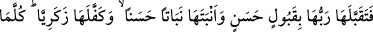
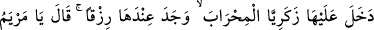
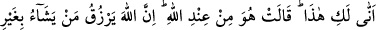
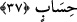

demektir: Onun istediği ve kendisinde hedefi Mescid-i Aksâ hizmetçiliği olan kemâlin
son derecesini hayâl ettiği erkek çocuğu, Allah’ın kendisine verdiği kız gibi değildir.
Onun bilgi dairesi ve arzusu, o kızda tecellî edecek büyük işleri kavrayamamıştır. Bu
çocuk onun istediğinden üstündür. Fakat o bilmemektedir. Bu son iki cümle, Meryem’in
annesinin söylediği: “Ben onu kız olarak doğurdum” ve “ben onu Meryem olarak
isimlendirdim” sözleri arasına girmiş bir mu’tarıza (yani ilâve, parantez) cümlesidir.
Bunun faydası, Hınne’nin nefsini tesellî etmek ve dünyaya getirdiği çocuğun
büyüklüğünü bildirmektir.
“Ben onun adını Meryem koydum.” Gaybları bilen Allah’a bunu arzetmekten
maksadı, Allah’a yaklaşmak ve onun korumasını istemektir. Çünkü onların dillerinde
“Meryem” kelimesinin mânası “ibâdet eden kadın ve Rabb’ın hizmetkârı” demektir.
Böylelikle, doğurduğu kız da olsa niyetinden dönmediğini ızhâr etmiştir. Bu kız çocuğu,
Beytü’l-Makdis’in hizmetkârlarından olmasa bile, orada ibâdet edenlerden olsun,
demek istemiştir.
Bu söz, Hınne, Meryem’i doğurmadan önce İmrân’ın öldüğüne delâlet eder. Çünkü
burada Meryem’in adını koyan annesidir. Halbuki çocuklara isim koyma işi babalara
âiddi. Âdetleri böyleydi.
“Ve ben; onu da, zürriyetini de kovulmuş şeytandan sana sığındırıyorum.” Yani
ben; onu da, çocuklarını da kovulmuş şeytanın şerrinden senin himâyene ve korumana
veriyorum. “Recm”in aslı taş atmak, yani taşlayarak kovmak demektir.
Peygamberimiz (s.a.) şöyle buyurmuştur:
“Her doğan çocuğa doğduğu anda şeytan dokunur ve çocuk onun dokunmasından
ağlayarak meydana çıkmış olur. Ancak Meryem ve oğlu müstesnâdır.”[35] Bunun
mânası şudur: Şeytan, her doğana tesir ederek saptırmak ve onu kendi izine sokmak
ister. Ancak Meryem ve oğlu bundan müstesnâdır. Çünkü Allah onları bu sığındırmanın
bereketiyle korumuştur.
37. Rabbi Meryem’e hüsnü kabul gösterdi; onu güzel bir bitki gibi yetiştirdi.
Zekeriya’yı da onun bakımı ile görevlendirdi. Zekeriya onun yanına, mâbede her
girişinde orada bir rızık bulur ve; “Ey Meryem, Bu sana nereden geliyor?” der; O
da: Bu, Allah tarafındandır. Allah, dilediğine sayısız rızık verir, derdi.
“Bunun üzerine Rabbi onu, “yani Meryem’i” güzel bir şekilde kabul etti.” Onu